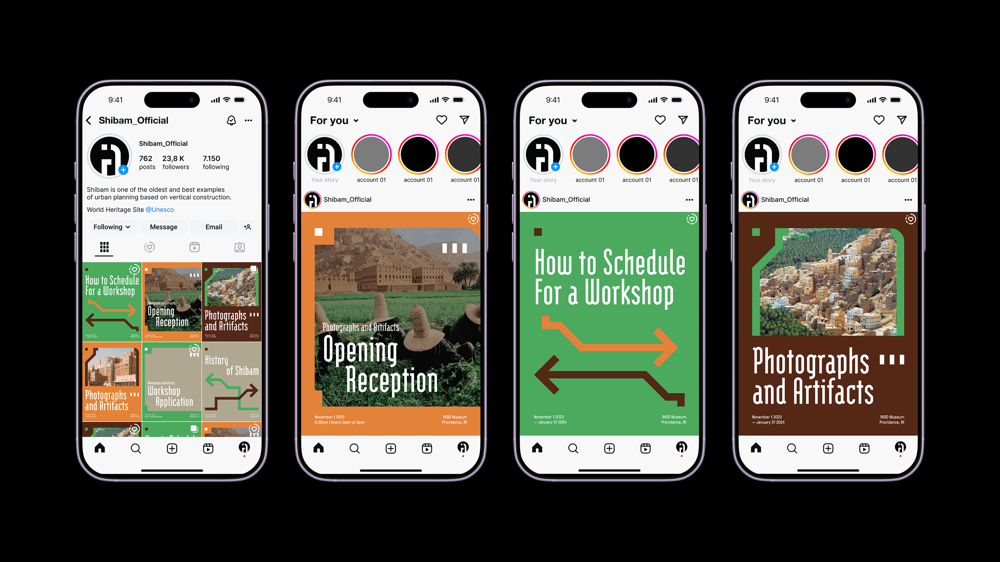

So Jung Yoon
윤소정
So Jung Yoon is a graphic designer based in New York City, NY. She holds a MFA degree from Rhode Island School of Design (RISD) in Graphic Design, with an emphasis on brand identity and spacial interaction design. She has worked at museums, national institution, and marketing agency.
윤소정은 서울과 뉴욕을 기반으로 활동하는 그래픽 디자이너이다. 로드아일랜드 디자인 스쿨(RISD)에서 그래픽 디자인 석사 취득 이후 브랜드 아이덴티티와 브랜드 액티베이션을 중심으로 작업한다. 두 도시 사이를 오가는 경험을 바탕으로, 경계와 이식이라는 개념을 디자인 실천으로 탐구하고 있다.
scroll

incorrect password
Constellation Brands @ Bar & Restaurant Expo
Agency: Factory 360 | Client: Constellation Brands
Role: Graphic Design Intern
Shader Studio
A browser-based tool that applies real-time animated shaders to text and images. Customize colors, blur, and speed, then export as a GIF or PNG.

Expiration Date
Every three years, each department at RISD curates and designs a triennial exhibition. Expiration Date considers the relationship between graphic design and temporality.

Shibam
Hypothetical branding concept of Shibam, Yemen — a UNESCO World Heritage Site celebrated for its ancient mudbrick tower architecture.
¹For Reference Only
A curation of 49 works from current and previous students of the RISD Graphic Design Graduate Program.

The Modelo Michelada @ Tales of the Cocktail
Agency: Factory 360 | Client: Constellation Brands
Role: Graphic Design Intern
Softness
A publication questioning softness and its various dimensions. Not about fragility, but about strength in vulnerability, compassion, and empathy.
Oblique Act
A tool that generates a random question prompt paired with a physical action instruction. Inspired by Brian Eno's Oblique Strategies — but redirecting your body, not your thinking.
![Is this a [Pe·rim·e·ter] or an (Em·brace)?](common/p/p_1.png)
Is this a [Pe·rim·e·ter] or an (Em·brace)?
A book functioning as a portal — fragments drawn from diverse fields, voices, and cultures, exploring layered entry points and nonlinear pathways through knowledge.
So Jung Yoon is a graphic designer based in New York City, NY. She holds a MFA degree from Rhode Island School of Design (RISD) in Graphic Design, with an emphasis on brand identity and spacial interaction design. She has worked at museums, national institution, and marketing agency.
scroll